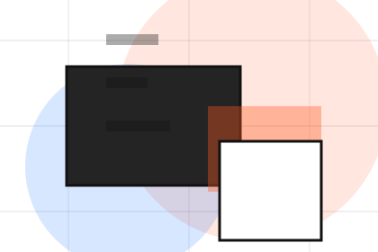
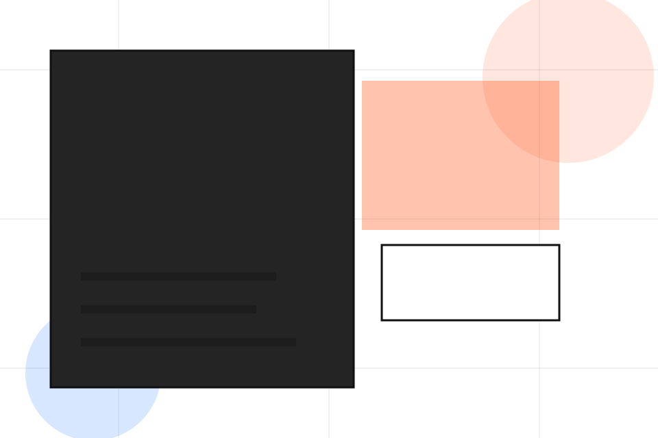
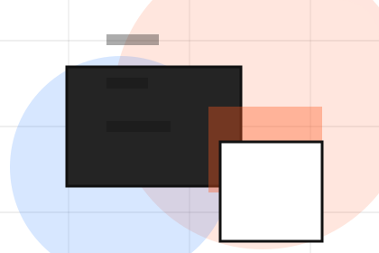
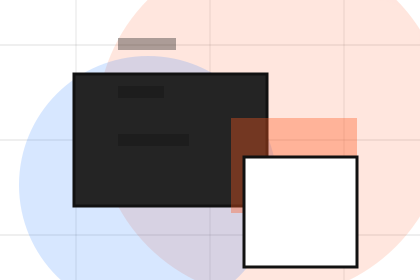
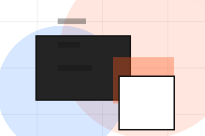
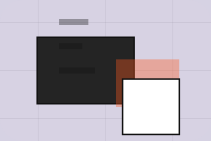

Start
How visitors begin this route and what detail is useful at the first step.
Process / 01
Process opens as a clear consulting decision hub: what Vector offers, who it helps, why it matters, and which route to take first.
The first screen combines positioning, proof, primary action, and fast internal navigation, so people can act immediately or compare the rest of the process route with context.
Idea-led editorial hero
Select the closest route and Vector keeps the next step, proof, and follow-up expectation aligned with clarity, leverage and measurable progress.

Process / 03
Analyse explains the operating sequence so visitors can see how the first request becomes a clear recommendation and follow-up.
The steps are written from the visitor side: what they do first, what Vector clarifies, what they receive, and how support continues.
Explore ProcessVector structures analyse around start, clarify, and a clear next route so visitors can compare the block quickly before they send a brief.
Send BriefProcess / 05
Execute explains the operating sequence so visitors can see how the first request becomes a clear recommendation and follow-up.
The steps are written from the visitor side: what they do first, what Vector clarifies, what they receive, and how support continues.
Explore ProcessHow visitors begin this route and what detail is useful at the first step.
What Vector reviews, filters, or explains before recommending the next move.

What the visitor receives afterward, including support, proof, or a handoff to the next page.
Process / 06
Measure explains the operating sequence so visitors can see how the first request becomes a clear recommendation and follow-up.
The steps are written from the visitor side: what they do first, what Vector clarifies, what they receive, and how support continues.
Explore ProcessHow visitors begin this route and what detail is useful at the first step.
What Vector reviews, filters, or explains before recommending the next move.
What the visitor receives afterward, including support, proof, or a handoff to the next page.
Process / 07
Adjust explains the operating sequence so visitors can see how the first request becomes a clear recommendation and follow-up.
The steps are written from the visitor side: what they do first, what Vector clarifies, what they receive, and how support continues.
Explore ProcessHow visitors begin this route and what detail is useful at the first step.
What Vector reviews, filters, or explains before recommending the next move.
What the visitor receives afterward, including support, proof, or a handoff to the next page.
Process / 08
Transfer explains the operating sequence so visitors can see how the first request becomes a clear recommendation and follow-up.
The steps are written from the visitor side: what they do first, what Vector clarifies, what they receive, and how support continues.
Explore ProcessVector structures transfer around start, clarify, and a clear next route so visitors can compare the block quickly before they send a brief.
Send BriefProcess / 09
Sustain explains the operating sequence so visitors can see how the first request becomes a clear recommendation and follow-up.
The steps are written from the visitor side: what they do first, what Vector clarifies, what they receive, and how support continues.
Explore Process

How visitors begin this route and what detail is useful at the first step.
Process / 10
Vector closes the process route with a clear action, a quick reminder of the value, and a low-friction way to send a brief.
Visitors who are ready can use the primary action. Visitors who are still comparing can scan the section links, proof, and support routes before they send a brief.
Send BriefThe final block keeps the choice simple: act now, compare one more proof route, or send enough detail for a focused response.
Send Briefclarity, leverage and measurable progress
A strategy studio site with large editorial type, idea-led modules, mosaic proof, and workshop conversion. Process ends with a direct path to send a brief, plus enough context for visitors who still need to compare.

Send BriefInformation is provided for planning and should be reviewed for the final client, location, and operating rules.